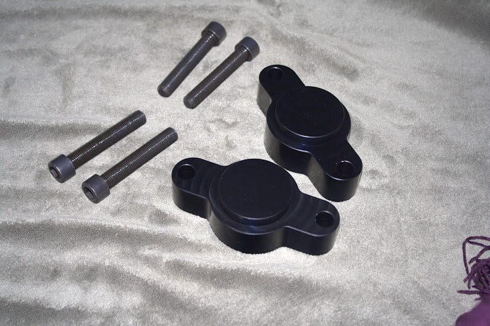
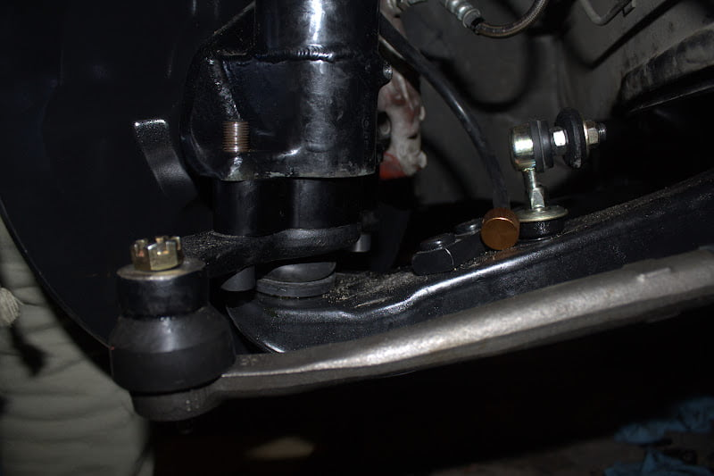

-
Re: Has anyone found "Bump Steer Spacers"
Got my spacers in today. Thanks buddy… -
Re: Has anyone found "Bump Steer Spacers"
Got mine today. They look awesome!!! -
Re: Has anyone found "Bump Steer Spacers"
I got mine yesterday…

Got them installed today

Thanks Again Kyle!Shiro Special #998

-----------------------------------
86T - Sold -
Re: Has anyone found "Bump Steer Spacers"
Anyone have the cad or .STP available for the V1 spacer?
I'd like to see if my machine shop could do a set for me, anyone?
''And at the end of the day you have a Mitsubishi. It's like masturbating with your own tears.'' Neit86T -
Re: Has anyone found "Bump Steer Spacers"
You have got to be kidding. After Kyle went to all the time and effort to design and make them, you have the audacity to ask for that for free. Either take off your strut and measure it or buy one and then have the machinist copy it.Z-31Turbo wrote: Anyone have the cad or .STP available for the V1 spacer?
I'd like to see if my machine shop could do a set for me, anyone?
The reason we have such a small number of aftermarket parts for the Z31 is because some of you guys are so damn cheap and won't pay for anything. If you don't support people like Kyle and Zach there will be nothing available and we might as well send our Z's to the crusher…and how much HP do you have at 0 boost -
Re: Has anyone found "Bump Steer Spacers"
Sell him the design.
THEN sell him a set of spacers when he finds out how much his machinist will charge him to make a set.
"…i think bov needs oil, its not closing fast enough so the car dies when you come off of boost…" -Automotive Genius -
Re: Has anyone found "Bump Steer Spacers"
Seriously?
I think if my idea was to produce part I would feel bad, but if I have the ability to have it done on my lunch time today, should I really feel bad for asking?
Kyle went to all the time and effort to design
All the time effort? The idea of the V1 spacer is pretty damn basic and was done on MANY other car before the Z31. I don't think to design it was time consuming or an effort. To have it done, and make it available to the community is an effort, but the design ? C'mon
There is a difference between personnal and production use.
I didn't paid for 'Solid motor mount', and I shared my dimensions and stuff with the community and boom, not even a months after they we're available threw different sources.
Does the community suffer from that ? I don't think so, I'm sure Zach sold a lot of solid mount, even if it's so easy to build at home for anyone.
You have to understand that aftermarket parts for the Z31 are available because there is money to make with them.
I won't pay to get a coilover adapter cause I can have them done, why pay?
Do you also tell people not the fix their car by themself because they steal money from the garage?
What the hell is that, asking for a CAD is nothing. I can use a caliper and figure it out, only difference is that I won't get them done today.
Am I lazy? No, I just know the drawing is already there, why not ask?
There is market for the parts you make, we are very few quantity here that can make it ourself. what are you scared of?
You want to make money on everyone because you have acess to a CNC?
I don't think that is what I call helping a community.
Congrats for the V2 mount, great design & improvement. Do I ask for those cads ? NO these are your idea, your design and I wouldn't feel good asking for them.
''And at the end of the day you have a Mitsubishi. It's like masturbating with your own tears.'' Neit86T -
Re: Has anyone found "Bump Steer Spacers"
well thanks for volunteering yourself to re-draw a basic CAD drawing for your own personal use.Z-31Turbo wrote: All the time effort? The idea of the V1 spacer is pretty damn basic and was done on MANY other car before the Z31. I don't think to design it was time consuming or an effort. To have it done, and make it available to the community is an effort, but the design ? C'mon
if it's pretty basic, then why are you asking for files?

-
Re: Has anyone found "Bump Steer Spacers"
LOL. I made a drawing just for your in what, 5 minutes? Pardon the small mistake, I'm kinda pissed right now.
Problem is, the CNC is almost NEVER available for personnal project. Now only thing I can do is hope it will be available again soon…
''And at the end of the day you have a Mitsubishi. It's like masturbating with your own tears.'' Neit86T -
Re: Has anyone found "Bump Steer Spacers"
I don't show the hole to drill on under the spacer because I don't have the part right now, I guess you can figure this part out. Simply add 1MM depth extra to make sure it get in totally.
Is this patented ? No
Will this reduce the sell of bump steer V2 spacer or even V1 spacer ? No
Do I feel bad for posting this? C'mon
''And at the end of the day you have a Mitsubishi. It's like masturbating with your own tears.'' Neit86T -
Re: Has anyone found "Bump Steer Spacers"
So basicly if you did this a day or 2 sooner you could of had your own made? Ummmm.... Wait.....what? Are you serious? Do you want to be spoonfed?Z-31Turbo wrote: I don't show the hole to drill on under the spacer because I don't have the part right now, I guess you can figure this part out. Simply add 1MM depth extra to make sure it get in totally.
Is this patented ? No
Will this reduce the sell of bump steer V2 spacer or even V1 spacer ? No
Do I feel bad for posting this? C'mon

-
Re: Has anyone found "Bump Steer Spacers"
I can tell you right now, that your design will not bolt up. There are also a number of factors you're not considering. Not to mention your tolerances. But what do I know, I'm just a designer, and designing stuff is effortless.
I don't think to design it was time consuming or an effort. To have it done, and make it available to the community is an effort, but the design ? C'mon
"…i think bov needs oil, its not closing fast enough so the car dies when you come off of boost…" -Automotive Genius -
Re: Has anyone found "Bump Steer Spacers"
RB20ZR:
Seriously, what's your point ? Being a d*ck, alright. Congrats, you are.
Make me say something I didn't say. Design is not easy, this is taking something to another level. Quote what you want.BSRJIRONMAN wrote:
I can tell you right now, that your design will not bolt up. There are also a number of factors you're not considering. Not to mention your tolerances. But what do I know, I'm just a designer, and designing stuff is effortless.
I don't think to design it was time consuming or an effort. To have it done, and make it available to the community is an effort, but the design ? C'mon
BRAVO. Criss de sans dessin.
Some cool dude say it's not right, than all other follow…!
Telling bunch of crap, this you're good at it!
Did I say this was the final drawing ? NO, this took 5 minutes.
Will it bolt up when I'm done? YES
I can do it, sure I can, but I know that If I need quick support, I'll knock to a closed door here.
I was only asking for a quick turn around since the CNC was available from 12h00 to 13h00. Master cam and some time on the setup, parts could be done in no time.
Dude, Let me have both parts in hand and I'll make it work.
Thanks for the help, and useless comments
''And at the end of the day you have a Mitsubishi. It's like masturbating with your own tears.'' Neit86T -
Re: Has anyone found "Bump Steer Spacers"
Good work my man.
Hey, after you've finalized the design, and tested prototypes, and created a CAD file, send me the .dwg file so I can pop some out. Thanks!
"…i think bov needs oil, its not closing fast enough so the car dies when you come off of boost…" -Automotive Genius -
Re: Has anyone found "Bump Steer Spacers"
Exactly. Why should you expect files for free when they have hours of R and D into them? Buy a set and copy them then. And theirs are anodized. Can you do that for cheaper aswell?BSRJIRONMAN wrote: Good work my man.
Hey, after you've finalized the design, and tested prototypes, and created a CAD file, send me the .dwg file so I can pop some out. Thanks!

Copyright © 2006–. All rights reserved. Privacy Policy